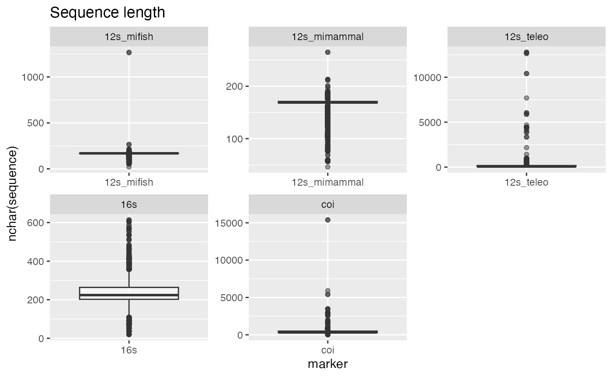
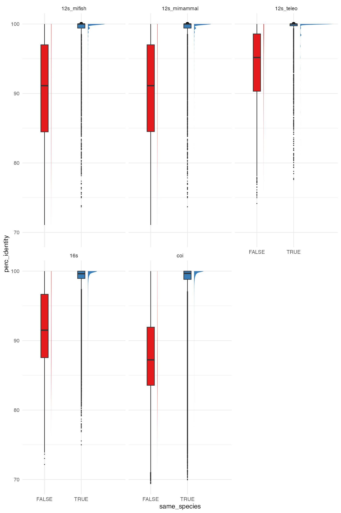

Species sequence identity in the eDNA Expeditions reference databases
species_identity.RmdReference databases
Reference database creation is documented at https://github.com/iobis/eDNA_trial_data, and reference
databases were downloaded to reference_databases from the
LifeWatch server using:
rsync -avrm --partial --progress --include='*/' --include='*pga_tax.tsv' --include='*pga_taxa.tsv' --include='*pga_taxon.tsv' --exclude='*' ubuntu@lfw-ds001-i035.i.lifewatch.dev:/home/ubuntu/data/databases/ ./reference_databases
rm -r ./reference_databases/silva*
reference_databases <- list(
"12s_mimammal" = list(
taxa = "~/Desktop/edna-reference-databases/12s_ncbi_mimammal_pga_taxa.tsv",
sequences = "~/Desktop/edna-reference-databases/12s_ncbi_mimammal_pga.fasta"
),
"12s_mifish" = list(
taxa = "~/Desktop/edna-reference-databases/12s_ncbi_mifish_pga_taxa.tsv",
sequences = "~/Desktop/edna-reference-databases/12s_ncbi_mifish_pga.fasta"
),
"12s_teleo" = list(
taxa = "~/Desktop/edna-reference-databases/12s_ncbi_teleo_pga_taxa.tsv",
sequences = "~/Desktop/edna-reference-databases/12s_ncbi_teleo_pga.fasta"
),
"coi" = list(
taxa = "~/Desktop/edna-reference-databases/coi_ncbi_pga_taxa.tsv",
sequences = "~/Desktop/edna-reference-databases/coi_ncbi_pga.fasta"
),
"16s" = list(
taxa = "~/Desktop/edna-reference-databases/16s_ncbi_pga_taxa.tsv",
sequences = "~/Desktop/edna-reference-databases/16s_ncbi_pga.fasta"
)
)We use this function from the ednagaps package to
generate WoRMS aligned species lists by marker. We need accepted WoRMS
taxonomy to reliably determine if sequences are from the same species or
not.
generate_reference_species(reference_databases)Analysis
First read the reference databases, and join the accepted WoRMS taxonomy. Sequences without an accepted WoRMS name and a marine or brackish flag are not retained.
input_taxonomy <- read_input_taxonomy() %>%
filter(rank == "Species" & (isMarine == 1 | isBrackish == 1)) %>%
select(input, phylum, class, order, family, genus, species = scientificname)
#> Warning: One or more parsing issues, call `problems()` on your data frame for details,
#> e.g.:
#> dat <- vroom(...)
#> problems(dat)
db <- read_reference_databases(reference_databases) %>%
filter(!is.na(species)) %>%
select(marker, seqid, sequence, input = species) %>%
inner_join(input_taxonomy, by = "input", keep = FALSE)
#> ■■■■■■■■■■■■■■■■■■■■■■■■■ 80% | ETA: 24s
ggplot() +
geom_boxplot(data = db, aes(x = marker, y = nchar(sequence)), alpha = 0.5) +
facet_wrap(~marker, scales = "free") +
ggtitle("Sequence length")
The function below writes a set of sequences to fasta, performs a blast of all sequences against all sequences, and returns the results. The results are filtered to remove self-alignments, and the query coverage is calculated.
align <- function(sequences) {
sequence_lengths <- data.frame(query_acc_ver = sequences$seqid, sequence_length = nchar(sequences$sequence))
seqinr::write.fasta(as.list(sequences$sequence), file.out = "sequences.fasta", names = sequences$seqid, as.string = TRUE)
result <- tryCatch({
pipe(glue("blastn -query sequences.fasta -subject sequences.fasta -word_size 11 -dust no -outfmt 6")) %>%
read.table() %>%
setNames(c("query_acc_ver", "subject_acc_ver", "perc_identity", "alignment_length", "mismatches", "gap_opens", "q_start", "q_end", "s_start", "s_end", "evalue", "bit_score"))
}, error = function(err) {
message(err)
})
file.remove("sequences.fasta")
result %>%
filter(query_acc_ver != subject_acc_ver) %>%
mutate(combined = paste0(pmin(query_acc_ver, subject_acc_ver), "_", pmax(query_acc_ver, subject_acc_ver))) %>%
distinct(combined, .keep_all = TRUE) %>%
left_join(sequence_lengths, by = "query_acc_ver") %>%
mutate(query_cover = (q_end - q_start + 1) / sequence_length * 100)
}Now process sequences for each marker and each genus. We select a
maximum of 10 sequences per species. Results are written to a
storr cache per marker.
max_sequences_per_species <- 10
for (selected_marker in names(reference_databases)) {
message(selected_marker)
st <- storr::storr_rds(glue("~/Desktop/temp/storr_{selected_marker}"))
for (selected_genus in sort(unique(db$genus))) {
message(selected_genus)
if (!st$exists(selected_genus)) {
sequences_genus <- db %>%
filter(marker == selected_marker & genus == selected_genus) %>%
group_by(species) %>%
slice_sample(n = max_sequences_per_species) %>%
arrange(genus, species)
if (nrow(sequences_genus) < 2) next()
genus_results <- align(sequences_genus) %>%
select(query_acc_ver, subject_acc_ver, perc_identity, alignment_length, query_cover) %>%
left_join(sequences_genus %>% select(seqid, species1 = species), by = c("query_acc_ver" = "seqid")) %>%
left_join(sequences_genus %>% select(seqid, species2 = species), by = c("subject_acc_ver" = "seqid")) %>%
mutate(same_species = species1 == species2) %>%
mutate(genus = selected_genus)
st$set(selected_genus, genus_results)
}
}
}Finally, we read the results from the storr cache and
visualize the results, filtering for a minimum query cover of 90%. These
are sequence identities within species versus between species of the
same genus.
min_query_cover <- 90
results <- map(names(reference_databases), function(selected_marker) {
storr_path <- glue("~/Desktop/temp/storr_{selected_marker}")
if (!file.exists(storr_path)) return(NULL)
st <- storr::storr_rds(storr_path)
map(st$list(), st$get) %>%
bind_rows() %>% mutate(marker = selected_marker)
}) %>% bind_rows()
ggplot(results %>% filter(query_cover >= min_query_cover)) +
stat_halfeye(aes(x = same_species, y = perc_identity, fill = same_species), justification = -0.2, .width = 0, adjust = 30) +
stat_boxplot(aes(x = same_species, y = perc_identity, fill = same_species), width = 0.2, outlier.size = 0.1, outliers = TRUE) +
theme_minimal() +
scale_fill_brewer(palette = "Set1") +
facet_wrap(~marker) +
theme(legend.position = "none")
We can now calculate some cutoff values for clustering based on the within species sequence identity. This shows that the cutoff should be lower for COI than for 12S.
results %>%
filter(query_cover >= min_query_cover & same_species) %>%
group_by(marker) %>%
summarise(
p1 = quantile(perc_identity, 0.01),
p5 = quantile(perc_identity, 0.05),
p10 = quantile(perc_identity, 0.10),
p15 = quantile(perc_identity, 0.15),
p20 = quantile(perc_identity, 0.20)
)
#> # A tibble: 5 × 6
#> marker p1 p5 p10 p15 p20
#> <chr> <dbl> <dbl> <dbl> <dbl> <dbl>
#> 1 12s_mifish 86.8 94.6 97.7 98.8 99.4
#> 2 12s_mimammal 86.5 94.5 97.7 98.8 99.4
#> 3 12s_teleo 87.1 95.1 98.2 98.4 99.4
#> 4 16s 86.4 92.7 96.1 97.7 98.5
#> 5 coi 80.9 88.8 94.8 97.4 98.4